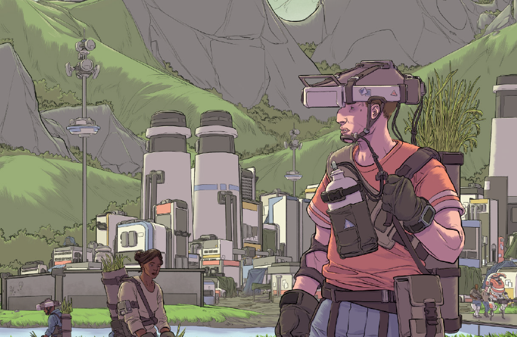

Evergreen

A burgeoning settlement brutalized by grown and nestled against the banks of a river. Tall apartment buildings stand a dozen stories high, grime-streaked white monoliths wrapped in cling-tight plastic, looming above the low mixed-material buildings at their feet. The colony is bordered by a low wall, with construction pushing right up against the barrier. Smoke drifts up from the dense settlement and blends with low rain clouds.
This is Evergreen, a colony in its second generation and home about eleven thousand citizens. The only permanent settlement on Hercynia, it's managed by a corpro by the name of Landmark Colonial and has enjoyed fifty years of smooth sailing up until the recent attacks that began just over a year ago.
Layout and Surroundings
Click to open
Evergreen’s western edge is bordered by a wide, slow-moving river. Across the water is a broad expanse of semi-developed farmland that stretches for kilometers before petering out into thick, temperate rainforest.
The colony’s initial urban growth boundary was defined by [Patience,](../people/patience.md) the colony’s administrative NHP, and staked out by planners and construction workers. Tall, vacant apartment blocks stand close to the river – ten-plus stories of habitats built, sealed, and awaiting their tenants — and loom over the comparatively small, populated inland districts, which are composed of smaller apartment blocks, two to three stories tall.
This eastern side of Evergreen looks out towards the strait. A squat prefab wall rings the current boundaries of the city; beyond is a muddy clear-cut, expanding every day as massive drone cutters and their handlers chew into the old growth east of the city center. The colony’s landing bowl — where ships land and depart – rests a few kilometers southeast of the settlement as well. Until the summer, it is flooded, the pad at the bottom in need of repair.
Daily Life
Click to open
For the last 50 years, life in Evergreen has been fairly mundane. Patience determines the roles of individual colonists based on a combination of their SSC-calculated “genetic predispositions”, agglomerated aptitude tests, and personal preferences, then assigns daily, weekly, monthly, and yearly tasks designed to guide their development and career goals. For most colonists, this means one of three things: they produce, engineer, or facilitate.
The production track includes farming, crafting, resource extraction, harvesting, manufacturing, fabrication, and other responsibilities with a focus on physical good production and maintenance. These colonists tend to be the ones growing, harvesting, and preparing foodstuffs, biofuel, raw materials, consumable goods, and so on. Farmers, brewers, clothiers, carpenters, loggers, miners, ranchers, and general workers are all counted in this category. This is the track for all-rounders and skilled general laborers, meant to ensure that the colony has a wide base of talent and human resources from which it can draw.
Engineer-track colonists adopt industrial and scientific roles and others that require deeper or more specialized training. An engineer-track colonist might be an electrical or mechanical engineer, a subaltern technician, a printmaster, a meteorologist, an omninet specialist, a nuclear engineer, a drone pilot, a doctor, or a medical technician. These people are specialists, meant to ensure the colony’s systems are as efficient and reliable as possible.
The facilitator track, last of all, is a fluid category with a focus on interpersonal aptitude. The colonists assigned to these roles are teachers, foremen, operations managers, city planners, coders, bureaucrats, assistants, and therapists — people who work to ensure the smooth functioning of the colony and the health of its people, now and into the future.
The militia is made up of a third of each of these tracks, augmented by subaltern units.
Locations
Click to open
Residential Districts
The city’s residential districts are generally composed of mixed high-density apartments, transit corridors, and short, walkable blocks. The western quadrants are the most built up, and the least occupied – they were built for future generations to move in and occupy. The streets in those areas are largely vacant. The eastern side, meanwhile, is lower built and less dense – though not significantly so – and is home to the bulk of Evergreen’s population.
Founders Bridge
A bridge in the process of being built across Evergreen’s river, the Founders Bridge connects the agricultural western bank to the built-up eastern bank. The concrete bridge is halfway complete. A wooden bridge spans the rest of the distance, built across pylons that will later support the completed bridge. Currently, the bridge can support foot traffic, ground cars, and beasts of burden, but not mechs.
Stable Reactor Plant
Well downriver, on the east side of the river, sit the twin coolant towers of Evergreen’s Stable Reactor Plant, Towers 1 & 2. Salvaged from the colony ship that brought the first generation of colonists to Hercynia, the stable reactors at the plant can theoretically power Evergreen for millennia. A paved road leads from the colony to the reactor, where there is also a small campus for the reactor’s engineers.
The day-to-day functions of the plant are largely automated, controlled by an on-site comp/con and monitored by Patience, with ultimate executive authority given over to on-site engineers.
Communication Towers 1, 2, and 3
Evergreen’s local omninet and subomni communications are bolstered by three communications towers set up in a triangle around the settlement. Their primary function is to increase the broadcast range of the colony’s radio coverage and better direct comms lasers into and out of the valley in which the settlement lies. As a secondary function, they can provide limited-bandwidth omninet communications in the event of a node shutdown.
The Bottom of the Well
A popular and well-trafficked tavern, the Bottom of the Well is a hunched, three-story building with an enclosed patio area. It is set against the river with docks extending out into the shallows. The whole first floor is a bar, meeting place, and performance space. One wall opens out onto the docks and can be buttoned up in the cold. The second and third floors contain modest one-bedroom apartments. The roof offers another patio space, where laundry is often air-dried during the summer. You have comfortable, functional lodgings here.
The Bottom is owned by Mir Bahadur, a first-generation Evergreen-Hercynian in his late sixties. Mir once worked for Castor Fielding as an engineer and maintains a friendly relationship with him.
Governor's Farm
Built in the center of the city, the Governor’s Farm is a walled complex serving as the administrative heart of Evergreen. It houses not only Patience’s physical architecture, but the Council Hall, the town’s municipal data storage center, the militia’s main armory, a cold gene storage site, the settlement’s omninet tower, and its largest printer, along with a number of administrative offices and outbuildings. Gated checkpoints control ingress and egress at each cardinal direction. The central cluster of administrative buildings, including the Council Hall, is colloquially called “the Governor’s Mansion”. This is where Patience holds office.
Depot District
Located in the northeast quadrant of Evergreen, the depot district is a busy industrial area where stored and harvested goods are housed before use. Native materials — stone, lumber, and so on — are brought in through a number of checkpoints and gates along the eastern growth boundary and housed in the district’s many warehouses. Much of the district is full of prepackaged, premade materials, offloaded from the colony ship upon arrival. These resources are kept under lock and key.
A host of drone swarms patrol the depot district, with hive nexuses located atop each warehouse, while the colony’s large industrial drones park in orderly ranks on broad pads of concrete.
Beyond the Walls
Click to open
Evergreen is nestled on the floor of a wide valley bordered by tall, snow-capped mountains. Its climate is most like that of a temperate rainforest, with summer storms that bring floods and, rarely, snow that reaches the valley floor in the winter.
In the lands around Evergreen, some colonists have made their homes on lonely tracts of cultivated farmland. The soil is rich enough now to produce sturdy crops. Native trees butt up against waving regiments of tall corns, their stalks supported by legume vines and modest gourds. Rice paddies march along the river upstream from Evergreen, siphoning the cool water out from the wide current. It is rare, but not unheard of, for colonists ranging out in any direction to encounter the rusted, decaying remains of old Union ships or mechs, forgotten after the resolution of the whatever long-forgotten war happened here. The citizens of Evergreen have been told to flag the wreckage and avoid the area, as there might be old munitions lingering in the ruins.
Further out lie areas of dense growth, as yet unexplored by the colonists. Bands of the planet’s surface have been imaged by passing ships, but these are standard-definition still images, poor in data beyond what is offered by the visual spectrum and shallow radar; they are scans of opportunity, at best.
A distant mountain range marks the northern horizon — no more than a low bruise across the horizon. Clouds spill down from the valley’s western slopes, soaking the deep woods in steady, warm rain. Further still, the land stretches for thousands and thousands of kilometers, forest eventually giving way to a frost tundra beyond a series of massive mountain ranges and broad plains. Partly a product of the natural rain shadow and partly the result of an initial glassing campaign by Union, the tundra becomes increasingly dry and cold the closer one gets to the pole.
To the colony’s east and west, the valley walls rise up to alpine heights from deep woods. To the east, Solo Terra is wooded and ripples with mountains. This landscape eventually gives way to a coastline that dissolves into a gray and turbulent strait, dividing the landmass from its eastern cousin – a largely unexplored and undocumented land. The west mirrors the east, with forests that run for thousands of kilometers until ocean, split only by riverlands and plains. The west is dotted with the scattered wrecks of ships that crash-landed on Hercynia, the remains of aboveground Egregorian tower-hives, and desolation scars where nothing grows.
South of Evergreen, the valley floor is broken by sudden buttes — evidence of the planet’s ancient glacial past — and is divided by a wide, slow river that winds south through shimmering grasslands. To the south, the forest eventually runs out into plains. Further still, the continent shatters into an ocean marked by thousands of islands that become more and more tropical the closer you get to the equator. No other continent stands between these archipelagos and the southern pole.
Miscellena
Click to open
-
Everyday life in Evergreen is goal-driven and worked in AM and PM shifts. Most production and construction occurs during the earlier shifts, while maintenance and the quieter production and construction jobs are undertaken during the PM shifts.
-
Patience is, essentially, omnipresent. Colonists’ homes (the ones on the grid, at least) are all patched into Patience via their resident comp/con units, personal assistants that keep their calendars and schedules, reminders, contacts, and so on. Most colonists have also fabricated slates. Patience listens, collects, and collates all data in their central storage unit below the Governor’s Farm. The relationship is one-way: while the comp/cons can feed information back to Patience, colonists typically can’t access high-level data from the NHP without clearance granted by their job portfolios.
-
Evergreen operates on a hundred-year plan: a century after landfall, the colony will be at capacity — two hundred thousand citizens — and well on the way to a complete transition from an NHP-administered settlement to one governed by a fully organic leadership. In the meantime, Patience runs the show, with interpersonal conflicts handled by a Settler’s Council of elected representatives.
-
Requisition is the currency of Evergreen. Patience administers colonists’ license data and apportions out print time. Colonists receive a guaranteed base level of requisition with the ability to earn more through training and education, completion of assigned goals, community service, celebrations of birthdays and other holidays, community service, victory in local sports leagues, artistic pursuits, and so on. When dealing with the unsanctioned homesteads of the Gray Towns, colonists barter goods and services. There is, of course, a healthy unsanctioned market in Evergreen that runs in parallel to the official economy.
-
Evergreen has five festivals: Settlement Day (a celebration of the colony’s foundation), New Year’s Day, Heart of Winter (a festive dinner at the heart of winter), Summer’s Dawn (usually a field day at the beginning of summer), and Landmark Day (a mandatory celebration of the foundation of Landmark Colonial).